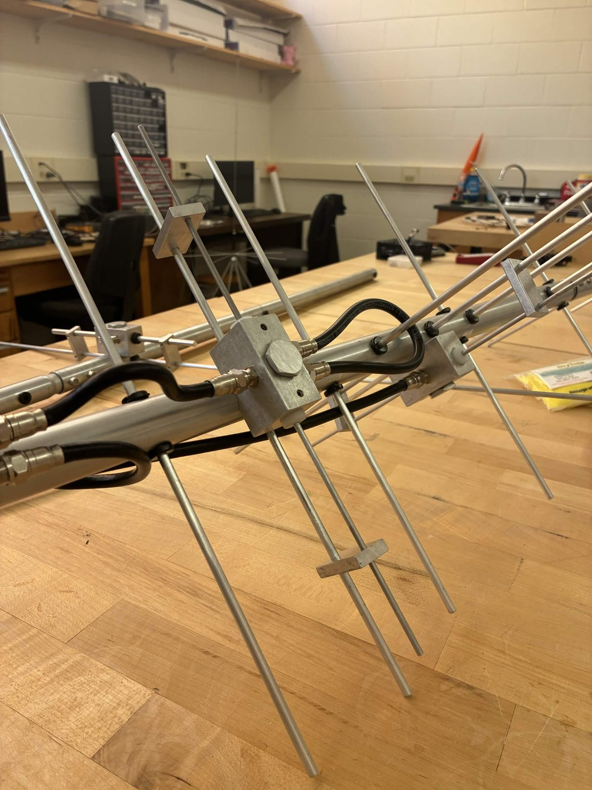

space environmentmeasured in place
Radiation, thermal swings, and drag, measured in place to check the models engineers rely on.
Orbit offers conditions that are hard to fake on the ground. Our students pick questions worth sending there and design the hardware to answer them.
Every Clemson CubeSat starts with a research question. Students write it down, work out what the spacecraft has to measure, and then do the engineering around it: mechanical fit, power budget, data handling, and the safety reviews launch providers require.
Faculty advisors help keep the science honest, and members see an experiment through from the first question to the final design review.
Radiation, thermal swings, and drag, measured in place to check the models engineers rely on.
Attitude control, power, and software that has to run on very little hardware.
Instruments that look at Earth or near space, with an eye on data regional partners can use.

Link budgets and ground stations for a spacecraft that's only overhead for a few minutes at a time. Members are already building and testing the antennas in our lab.